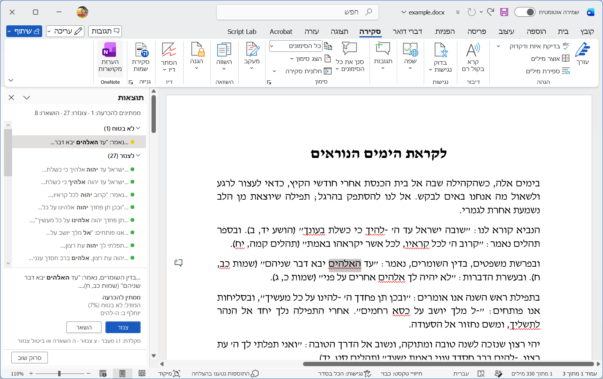
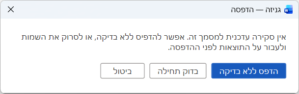
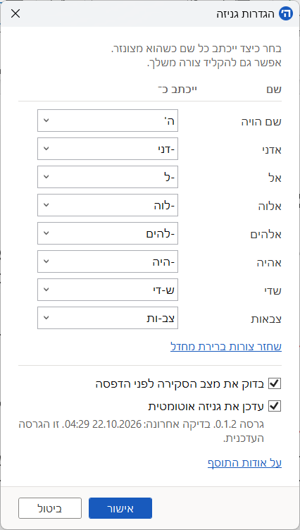

כולנו מכירים את הבעיה
מדפיסים דפי מקורות לשיעור, מחלקים אותם, ורק אחר כך מגלים שנשארו בהם שמות קדושים.
כשזה קורה שוב ושוב, הדפים מצטברים. איסוף, אחסון ופינוי לגניזה עולים כסף רב, והעלות נופלת על ישיבות ובתי כנסת. שם אחד שנשאר בלי לשים לב עלול להפוך ערמה שלמה של עותקים לדפים שצריך לגנוז.
יתירה מכך - פעמים רבות האזכרות כלל לא מתגלות, אנשים זורקים את הניירות ושם שמים מתבזה.
כאן נכנס התוסף גניזה. הוא עוזר לאתר שמות קדושים ולשנות את כתיבתם עוד לפני ההדפסה, כדי לצמצם את הדפים שיגיעו לגניזה בגלל אזכרות שנשכחו.
התוסף בפעולה
לחצו על סקירת שמות בקבוצת גניזה שבכרטיסיית סקירה ב-Word. התוסף סורק את המסמך ופותח את חלון התוצאות.
סקירת התוצאות
השמות מחולקים ללצנזר (שונו אוטומטית), להשאיר (נשארו כמו שהם), ולא בטוח (מחכים להחלטה שלכם). בחירת שורה מקפיצה למקומה במסמך, ושם בוחרים צנזר או השאר. אפשר לשנות כל החלטה ולשחזר שמות שצונזרו.


בדיקה אחרונה לפני הדפסה
אם נשארו שמות שמחכים להחלטה, או שהמסמך לא נסקר, התוסף שואל לפני ההדפסה.


הגדרות
החץ הקטן בקבוצת גניזה פותח את ההגדרות: בחירת צורת הכתיבה של כל שם, הפעלת הבדיקה לפני הדפסה ועדכונים אוטומטיים, והגרסה המותקנת.


מה טעון גניזה?
הרמב"ם (יסודי התורה ו, ב) פוסק שהמוחק שם משבעת השמות של הקב"ה לוקה מן התורה, וכך נפסק בשו"ע. לגבי פסוקים ודברי תורה שאינם מכילים אזכרות - נחלקו הפוסקים. מוסכם שיש איסור לבזות ולהשליך אותם, אך נחלקו לגבי תוקף האיסור והתנאים שלו.
התוסף נכתב על דעת הנוהג בישיבת 'ברכת משה' במעלה אדומים, על פי דברי רה"י הרב נחום אליעזר רבינוביץ (שו"ת שיח נחום סימן עד). הרב פסק על פי הרמב"ם שהאיסור על דברי תורה שלא מכילים אזכרות הוא מדרבנן. עקב כך, על פי תנאים המפורטים בתשובת הרב, ניתן להשליך דפים כאלה לפח או למחזור באופן מכובד. לעומת זאת - דפים המכילים אזכרות מפורשות טעונות גניזה מדאורייתא ובהם הרב החמיר.
התוסף אינו מבטיח שהדף לא טעון גניזה לכל הדעות. יש פוסקים שסברו שכל דברי תורה טעונים גניזה ולדעתם התוסף לא יועיל כלל. על כל משתמש להתייעץ עם הפוסק שעל פיו הוא נוהג.
איך התוסף עובד?
חיפוש שמות במסמך הוא מורכב כיוון שיש מהשמות שנכתבים כמו מילים או משמעויות אחרות - כגון 'אל' כמילת יחס, 'אלהים' במשמעות דיינים או במשמעות אלילית.
התוסף מכיל מודל בינה מלאכותית שיודע להבין את ההקשר של המילה ולתת הערכה לסבירות שמדובר בשם קדוש. המודל אומן על טקסט ממקורות מגוונים - תנ"ך, סידורי תפילה, ומאמרים תורניים במשלב מודרני.
המודל רץ על המחשב שלכם ולא דורש חיבור לאינטרנט כלל (למעט בדיקת עדכונים). שום טקסט שלכם לא נשלח לשום מקום חיצוני. זו גם הסיבה שהתקנת התוסף דורשת נפח אחסון גדול יחסית - נפח המודל הוא כ-100MB.
המודל לא מושלם - הוא משתדל לשאול לגבי מקרים גבוליים, אך יש מקרים שבהם הוא בטעות יצנזר מילה שאינה קדושה, או במקרים נדירים אפילו ישאיר אזכרה שיש בה קדושה. אין לסמוך על התוסף לחלוטין, והאחריות על המשתמש לבדוק את התוצאות.
התקנה
- הורידו את קובץ ההתקנה והריצו אותו. ההתקנה היא למשתמש הנוכחי, לא דורשת הרשאות מנהל או חיבור לאינטרנט, וכוללת את המודל.
- פתחו את Word. בכרטיסיית סקירה תופיע קבוצת גניזה עם הכפתור סקירת שמות.
- זהו. כשיש חיבור לאינטרנט, התוסף מתעדכן לבד ברקע (אפשר לכבות זאת בהגדרות).
דרישות: Word ל-Windows, בגרסת 64 ביט.
תודות ורישיון
התוסף לא היה מתאפשר לולא עבודתם של:
- 'עולה מן המדבר', הירחון של ישיבת ברכת משה, ששימש באישור העורכים לאימון המודל. תודה מיוחדת לעורכי הירחון לאורך השנים, שצנזרו את השמות בעבודת יד, גיליון אחר גיליון; ומעבודתם למד המודל.
- המודל מבוסס על BEREL 3.0 של 'דיקטה', המרכז הישראלי לניתוח טקסטים (Apache 2.0), שאומן מחדש ושונה לצורך זה. התוסף אינו מוצר של דיקטה ואין בכך המלצה של דיקטה על התוסף.
- תנ״ך עם תיוגי משמעות: Open Scriptures Hebrew Bible (CC BY 4.0), על בסיס כתב יד לנינגרד, ו־STEPBible TAHOT של Tyndale House, קיימברידג׳ (CC BY 4.0).
- תפילות ופיוטים מספריא, ובהם סידורי ומחזורי מצודה (CC BY) ומהדורות ויקיטקסט (CC BY-SA), ושירה מפרויקט בן־יהודה.
התוסף 'גניזה', הקוד והמודל, מופץ ברישיון Apache 2.0, ללא כל אחריות. רישיונות ותודות מלאים.